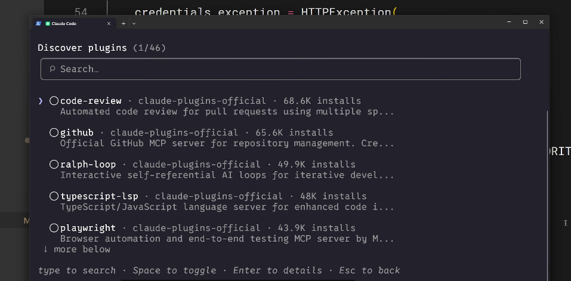
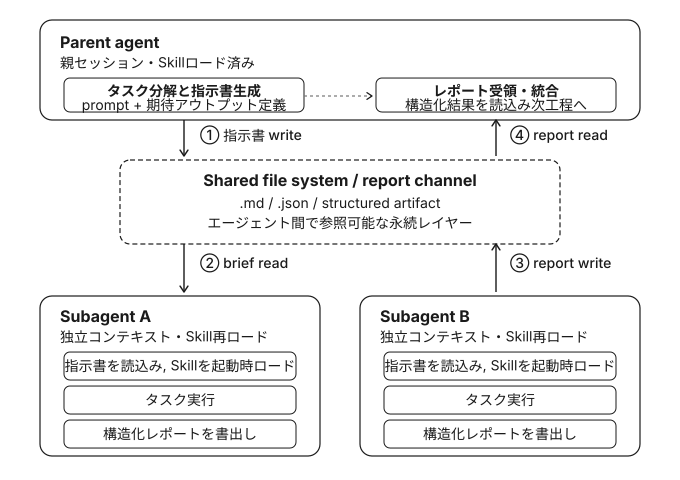

claude-code skills 101
2026年05月01日
regmonkey_index:
title_fontsize: 1.2em
bullet_fontsize: 1.0em
children:
- title: 1. なぜSkillを共有するのか
description:
- 個人利用に留めると<strong>標準化・一貫性</strong>の効果が得られない
- チーム・組織への展開で初めて運用価値が生じる
width: [40, 60]
- title: 2. リポジトリへのコミット
description:
- <code>.claude/skills</code> にコミットすればGit経由で<strong>自動配布</strong>
- プロジェクト固有の標準・ワークフローに最適
width: [40, 60]
- title: 3. プラグイン経由
description:
- マーケットプレイス経由で<strong>リポジトリを跨いで配布</strong>
- 汎用的な知識・コミュニティ向けに有効
width: [40, 60]
- title: 4. エンタープライズ Managed Settings
description:
- 組織管理者が<strong>最高優先度</strong>で全社配布
- 強制したい標準・コンプライアンス用途
width: [40, 60]
- title: 5. SkillsとSubagentsの関係
description:
- Subagentは<strong>Skillを自動継承しない</strong>のが落とし穴
- カスタムSubagentでは<code>skills:</code>に明示列挙が必要
width: [40, 60]なぜSkillを共有するのか
配布手段①：リポジトリへのコミット
配布手段②：プラグイン経由
配布手段③：エンタープライズ Managed Settings
SkillsとSubagentsの関係
個人利用のSkillはレビューを助けるが，チーム共有で初めて標準化・一貫性が手に入る
共有が生む3つの効果
配布手段は3種類．スコープと優先度で使い分ける
regmonkey_index:
title_fontsize: 1.1em
bullet_fontsize: 1.0em
children:
- title: リポジトリコミット
description:
- <strong>プロジェクト単位</strong>
- Gitで自動配布される最もシンプルな手段
width: [40, 60]
- title: プラグイン
description:
- <strong>複数リポジトリ横断型</strong>．
- マーケットプレイス経由でコミュニティ配布
width: [40, 60]
- title: エンタープライズ Managed Settings
description:
- <strong>組織全体</strong>
- 最高優先度でポリシーを強制
width: [40, 60]なぜSkillを共有するのか
配布手段①：リポジトリへのコミット
配布手段②：プラグイン経由
配布手段③：エンタープライズ Managed Settings
SkillsとSubagentsの関係
Gitでの版管理に乗せるだけで，cloneしたメンバー全員が追加導入なしにSkillを使える
最もシンプルな共有方法
.claude/skills 配下にSkillを配置：clone時に自動で読み込まれるgit push すれば，次の git pull でチーム全員に反映される.claude ディレクトリにはagents・hooks・skills・settingsが入り，通常のGitワークフローで版管理される向いているユースケース
なぜSkillを共有するのか
配布手段①：リポジトリへのコミット
配布手段②：プラグイン経由
配布手段③：エンタープライズ Managed Settings
SkillsとSubagentsの関係
マーケットプレイスに登録すれば，他のチームや個人も自分のClaude Codeに導入できる
プラグインの構造と配布フロー
skills ディレクトリを作る：.claude と同じ構造でSkillを並べるSKILL.md を置く向いているユースケース

なぜSkillを共有するのか
配布手段①：リポジトリへのコミット
配布手段②：プラグイン経由
配布手段③：エンタープライズ Managed Settings
SkillsとSubagentsの関係
管理者がmanaged settings経由で配布したSkillは，個人・プロジェクト・プラグインを上書き
Managed Settings の特徴
strictKnownMarketplaces でプラグイン導入元を制限し，承認済みソースのみを許可できるstrictKnownMarketplaces の設定例
個人ニーズはリポジトリへ，コミュニティ価値はプラグインへ，全社強制はManaged Settingsへ
record1:
category: リポジトリ<br>コミット
rule:
- <span class="regmonkey-bold">プロジェクト単位</span>でGit経由配布．clone&pullで自動同期
actions:
- <code>.claude/skills</code> にSkillを置きコミット
- チーム標準・プロジェクト固有ワークフローに最適
- リポジトリ構造に依存するSkillはここに置く
record2:
category: プラグイン<br>経由
rule:
- <span class="regmonkey-bold">複数リポジトリ跨ぎ</span>．マーケットプレイス経由で広域配布
actions:
- 独立したプラグインプロジェクトに <code>skills/</code> を作る
- 各Skillは <code>SKILL.md</code> を含むフォルダに分ける
- 汎用的・コミュニティ価値のあるSkill向け
record3:
category: エンタープライズ<br>Managed Settings
rule:
- <span class="regmonkey-bold">組織全体・最高優先度</span>．個人・プロジェクト・プラグインを上書き
actions:
- 強制したい標準・コンプライアンス・セキュリティ用途
- <code>strictKnownMarketplaces</code> で導入元を制限可能
- 「<span class="regmonkey-bold">絶対に守らせたい</span>」基準のときに選ぶなぜSkillを共有するのか
配布手段①：リポジトリへのコミット
配布手段②：プラグイン経由
配布手段③：エンタープライズ Managed Settings
SkillsとSubagentsの関係
親セッションでロード済みのSkillでも，Subagentは新しいコンテキストで起動するため引き継がれない
落とし穴：Subagentでよくある誤解
Subagent活用のメリット
組み込みエージェントはそもそもSkillを使えない．カスタムエージェントだけがSkillを宣言できる
組み込みエージェント
REMARKS
カスタムエージェント
.claude/agents 配下に自分で定義するエージェントskills: フィールドでロードしたいSkillを明示REMARKS
エージェント定義のfrontmatterに skills: フィールドを追加し，使わせたいSkill名を列挙する
紐付け手順の3ステップ
.claude/skills 配下にSkillを配置済みであることを確認する/agents コマンドで対話的に作成するか，.claude/agents 配下にmarkdownファイルを直接書くskills: フィールドに，ロードしたいSkill名をカンマ区切りで列挙するfrontmatterの記述例
accessibility-audit と performance-check を両方ロードした状態で起動する永続化されたファイル(.md / .json)を介した非同期通信に置き換えることでメモリを共有する

record1:
category: 共有の意義
rule:
- 個人利用ではなく<span class="regmonkey-bold">チーム・組織配布</span>で運用価値が立ち上がる
actions:
- 同じSkillを全員で使い，レビュー・スタイル・運用を標準化
- 配布スコープと優先度で3手段を使い分ける
record2:
category: リポジトリ<br>コミット
rule:
- <span class="regmonkey-bold">プロジェクト単位</span>．Git経由で自動配布される最もシンプルな手段
actions:
- <code>.claude/skills</code> にコミット．clone&pullで全員に反映
- チーム標準・プロジェクト固有ワークフロー向け
record3:
category: プラグイン<br>経由
rule:
- <span class="regmonkey-bold">複数リポジトリ跨ぎ</span>．マーケットプレイス経由で広域配布
actions:
- プラグインプロジェクトに <code>skills/</code> を作り <code>SKILL.md</code> を配置
- 汎用的・コミュニティ価値のあるSkillに最適
record4:
category: Managed<br>Settings
rule:
- 組織全体・<span class="regmonkey-bold">最高優先度</span>．個人・プロジェクト・プラグインを上書き
actions:
- 強制したい標準・コンプライアンス・セキュリティ用途
- <code>strictKnownMarketplaces</code> でプラグイン導入元を制限
record5:
category: SubagentsとSkill
rule:
- Subagentは<span class="regmonkey-bold">Skillを自動継承しない</span>．明示的な紐付けが必要
actions:
- 組み込みエージェント（Explorer・Plan・Verify）はSkill不可
- カスタムエージェントの frontmatter に <code>skills:</code> を列挙
- タスク別エージェント×専用Skillで標準を委譲作業に強制Regmonkey Presentation. ©Ryo Nakagami. All rights reserved.